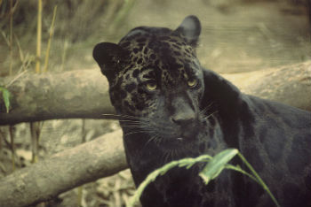

A Onça-Pintada, também chamada de Jaguar, é o maior felino das Américas e o terceiro maior do mundo, depois dos tigres e dos leões.
As onças-pintadas vivem geralmente em densas florestas. Estão espalhadas na América do Norte, Central e Sul.
Em seus habitats naturais elas vivem cerca de 15 anos. Se criadas em cativeiro, a expectativa de vida pode aumentar aproximadamente 10 anos. No Brasil, a onça-pintada é um animal que vive em diversos biomas: Amazônia, Pantanal, Mata Atlântica e Caatinga. No Pampa ela já foi extinta.
Dentre todas, na Mata Atlântica e na Caatinga a espécie está ameaçada de extinção. Pesquisas apontam que o Pantanal possui cerca de 20 mil onças-pintadas, local de maior densidade desse animal no mundo.
Segundo o Ibama (Instituto Brasileiro do Meio Ambiente e dos Recursos Naturais Renováveis), no Brasil essa espécie é considerada “vulnerável”. E, de acordo com a IUCN (União Internacional para a Conservação da Natureza), ela pertence à categoria "quase ameaçada" de extinção.
***
Também chamada de onça-preta ou jaguar-preto, é uma espécie muito rara que também apresenta marcas pelo corpo todo.
No entanto, por serem mais escuras não são tão nítidas. Esse tipo de onça-pintada demostra uma variação de melanina causada por genes dominantes e, por isso, são chamadas de onças melânicas. Sendo assim, elas possuem uma quantidade maior de melanina no corpo em relação as onças-pintadas.
Quanto ao tamanho, elas podem apresentar até 3 metros (incluindo a cauda). Os machos são maiores que as fêmeas e podem pesar até 150 kg.
*-*-*-*-*-*-*-*-*-*-*-*-*-*
Aluna: Adriana Cristina Telles
Discilina Responsive Web Development - 05/05/2021